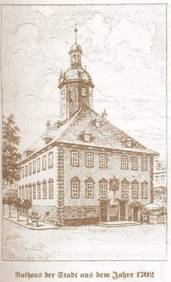
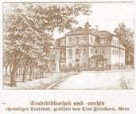

|
|
|
 Rathaus  Stadtbad
Feistkornstiftung
Marktbrunnen mit St. Wipperti
Backleber Tor
Alte Schule mit Rathaus und Kirche
Markt
|
786 Das Dorf Collide wird im Güterverzeichnis des Hersfeld, dem „Brevarium Lulli“, zum ersten Mal erwähnt. 1392 Cölleda erhält durch den Grafen Friedrich VI. von Beichlingen das Stadtrecht, die oberste Lehnshoheit verbleit jedoch bei Hersfeld. 1519 Die Grafen von Werthern erhalten die Grafschaft Beichlingen und alle Rechte für die Stadt. 1547 Nach dem Schmalkaldischen Kriege zählt Cölleda bis 1815 zum Kurfürstentum Sachsen. 1744 Einweihung der neuen Schule. Das Gebäude wird heute von der Kommunalen Berufsschule genutzt, 1986 vollständige i Erneuerung der Fassade. 1813 Am 23. Oktober durchfluten geschlagene französische Truppen die Stadt. Siegreiche preußische, sächsische und russische Truppen nehmen Quartier. Marschall Blücher besichtigt auf dem Marktplatz Teile der Schlesischen Armee. 1824 Cölleda wird zur Kreisstadt des neu geschaffenen Kreises Eckartsberga erhoben. 1857 Errichtung der Kreissparkasse 1866 Am 2. November wurde Fritz Hofmann in der Auenstraße (Prof.-Hofmann-Straße) geboren. 1874 Kölleda erhält Bahnanschluss an die Strecke Straußfurt-Großheringen (Pfefferminzbahn). 1881 Einstellung des Postkutschenbetriebes wegen der Überlegenheit der Eisenbahn. 1900 Gaswerk errichtet. 1908 Krankenhaus erbaut. 1911 Übergabe des Kinderheimes (heute Kindergarten), erbaut aus Mitteln der Karl- und Fritz-Feistkorn-Stiftung. 1913 Übergabe des Stadtbades, Feistkorn-Stiftung. 1936 Eine Fliegertruppe bezieht die Kasernen des errichteten Flugplatzes und Luftzeugamtes im Johannisfeld (Kiebitzhöhe). 1944 Schwerster Luftangriff auf den Flugplatz. Die Stadt bleibt von Bomben verschont. 1945 Am 11. April kampflose Übergabe der Stadt an die amerikanischen Truppen. Am 1. Juli wird die amerikanische Besatzung durch die sowjetische Militärverwaltung abgelöst. 1945 Am 13. Oktober wird auf dem Gelände des ehemaligen Flugplatzes das NEUTRO-Werk (später Funkwerk) gegründet. 1952 Am 1. September Auflösung des Kreises Kölleda. Die Stadt gehört zum neugebildeten Kreis Sömmerda, Bezirk Erfurt. 1957 Städtisches Schwimmbad am Streitsee übergeben. 1958 Beginn der Errichtung eines neuen Stadtteiles im Osten der Stadt 1986 1200jähriges Jubiläum der Stadt Kölleda. 1992 Wohngebiet Feistkornstraße mit 212 Wohnungen übergeben.
|